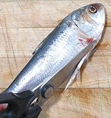

These fish are named for the last ray of the dorsal fin which reaches to near the end of the tail. Unfortunately this thread doesn't survive freezing and handling, so there is only a short stub on market fish. The Pacific species is found from San Pedro (Los Angeles) California south to Peru, but is rare on the outer coast of Baja California. The Atlantic species is found from Maine through the Caribbean and Gulf of Mexico to northern Brazil.
The Pacific can grow to nearly 12 inches, but the photo specimen, purchased from a Philippine market in Los Angeles (2014 US $1.24 / pound), was 10 inches long and weighed 5-1/4 ounces. The Atlantic can grow about an inch longer. Most of the commercial catch is ground into fish meal, and most other catch is used as bait for larger fish.
More on Herring Family.
|

Cutting off the keel |
This herring is fairly mild in taste compared to some other herrings, with good flavor and less oil than most. On the other hand, it is a very difficult fish to enjoy. It is totally shot through with bones, fin rays and thread-like spines. Even the hard keel has hard, bone-like fin rays going upward, meshing with the ribs coming down. Cooking:Cooking whole or pan dressed, by any method, is futile. I eat fish with chopsticks so I can disassemble them very precisely, and I'm used to bony fish, but even I had a hard time eating these, fried or steamed.I filleted some of these fish and found if I fried a fillet, lightly dusted with rice flour, until nice and golden brown on both sides, only a few spines were noticeable, at least for a fish 8 inches or smaller. I tried cooking fillets as a Philippine adobo (with vinegar), but the cooking time wasn't long enough to soften the spines and the result wasn't real pleasant. Next time I get some I'm going to try a ceviche, an overnight soak in lime juice will probably soften the spines sufficiently. Otherwise, the fallback, as for other small herrings, is to pickle them - or use them for bait.
Scales:This fish is completely covered with rather large thin scales. They have moderate adhesion so are not difficult to scrape off and don't fly around much, but some of them in the middle of the fish will just capsize rather than scrape off, so you'll have to pick those off by hand. The scales are so transparent it's difficult to tell if you got thm all.Cleaning:This fish has a hard keel all along the bottom, so there's no entry point for cleaning. Easiest is just to cut off the head and use your little finger to scoop out all the stuff. Otherwise, cut off the bottom from the vent forward to under the chin with kitchen shears, as shown in the photo to the left, but take a bit more than shown, at least 1/4 inch. After this it can be opened and cleaned the usual way as shown in Cleaning and Filleting Fish.Fillet:Filleting is a little more difficult than for many fish, especially making sure you're on the right side of the bones when cutting down from the top. When you've cut down over the backbone, cut to the bottom at the tail, then just pull the fillet off the bones going forward. The flesh you lose there is too shot full of bones to eat anyway. Trim off the flap of skin that was over the ribs. You'll notice the fillet is very prickly, but there's nothing you can do about that.Yield:A 5-1/4 ounce fish will yield about 1-1/2 ounce of fillet. That's just 29%, not real good. It's a real low cost fish, but even at 2014 US $1.24 per pound, you're now at $4.28 per pound for edible meat.Skin:The skin doesn't shrink noticeably, but in any case it's so thin and fragile it couldn't do much damage even if it did. There is no sense trying to skin this fish.Stock:Heads and bones make a stock that smells rather strong, and still tastes oily even after you've carefully removed any oil. Not recommended. |